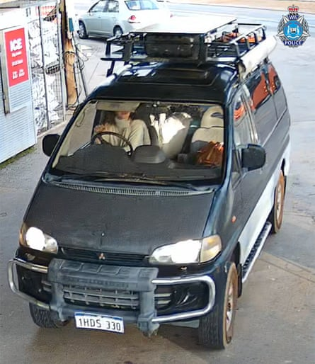

Police searching for German backpacker Carolina Wilga, who is missing in a remote part of Western Australia, have found an abandoned van believed to have mechanical issues.
The 26-year-old has not been seen or heard from since she visited a general store in the small town of Beacon, in WA’s north-east Wheatbelt region, on 29 June.
On Thursday afternoon police found the Mitsubishi Delica that Wilga had been driving, but the backpacker was not at the scene, WA police said in a statement.
“The vehicle was located abandoned in the Karroun Hill area, in the north-east Wheatbelt region of Western Australia , and is believed to have suffered mechanical issues.
“The search to locate her is continuing, with additional resources being deployed to the area.”
Det Sen Sgt Katharine Venn on Thursday described the search as a missing person investigation with “no indication that there’s any third party involvement in her disappearance”.
But her phone is not switched on and police have said they are “very concerned” for Wilga, who has been backpacking in Australia for two years.
Helicopters, planes and other vehicles were combing the Beacon area, more than three hours north-east of Perth.
Her mother has pleaded for help to find her daughter, writing on Facebook that she was “sorely missed”.
“I’m her mother and need her help, as I can’t do much from Germany ,” Katja Will wrote. “If anyone has any information, please contact the police. Please keep your eyes open!!”
Wilga is slim, with long wavy brown hair, brown eyes, and tattoos including symbols on her left arm.
Carolina Wilga was known to be in the Beacon area in Western Australia’s Wheatbelt.Photograph: Western Australia police force
The day before the Beacon sighting, Wilga went to a convenience store in Toodyay, which is also in the Wheatbelt region.
Venn said police were taking the case “very seriously” but that it was also possible Wilga was visiting picturesque, but “very remote” tourist spots.
“She could be off-grid, not have access to her phone, and she certainly had the capacity in the vehicle she was travelling in to be self-sufficient for quite some time,” Venn said.
“[Her] family are understandably distraught, very worried, as any of us would be with a young family member the other side of the world, missing in such unusual circumstances.
“Someone out there must have some vital information which can assist WA police in bringing Carolina back to her family and friends.”
Police have urged anyone with information to make contact.
They have also asked anyone with footage in Beacon or the surrounding north-east Wheatbelt area between 29 June and 4 July to upload it directly here .